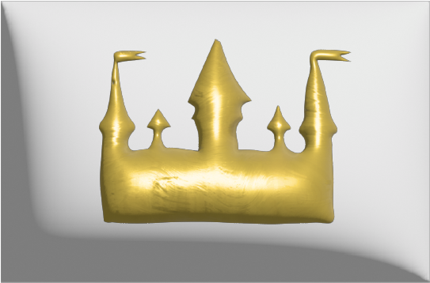
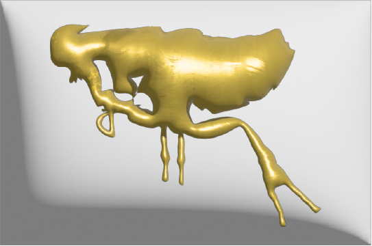
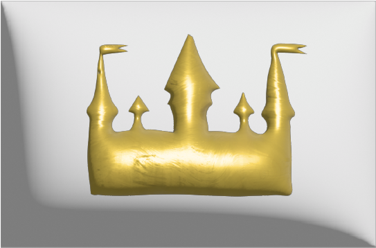
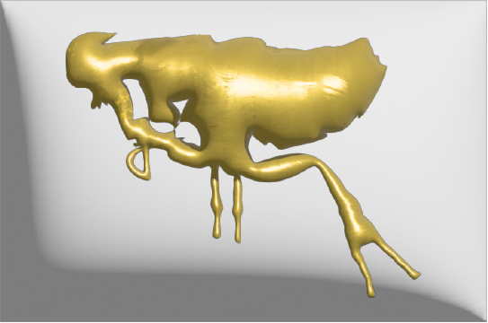
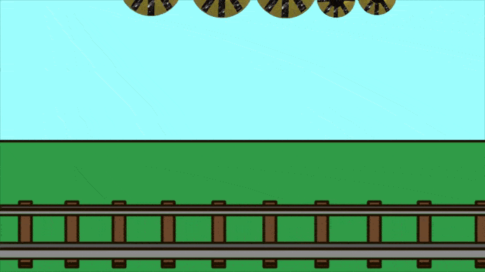
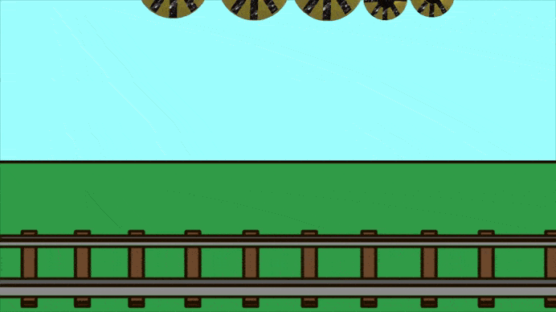

 

Джерело мікромініатюри
Жмеринський міський історичний музей
Колекція музею нараховує 3,3 тис. предметів. Унікальними є роботи Заслуженого майстра народної творчості України, мікромініатюриста Михайла Маслюка, фотографії та листівки станції Жмеринка з краєвидами міста початку ХХ ст. У експозиційних залах музею представлений побут жмеринчан кінця ХІХ — початку XX століття (меблі, музичні інструменти, особисті речі, фотокартки та сімейні документи). Працює виставкова зала, де проходять виставки та презентації робіт художників, майстрів народної творчості та музична вітальня.